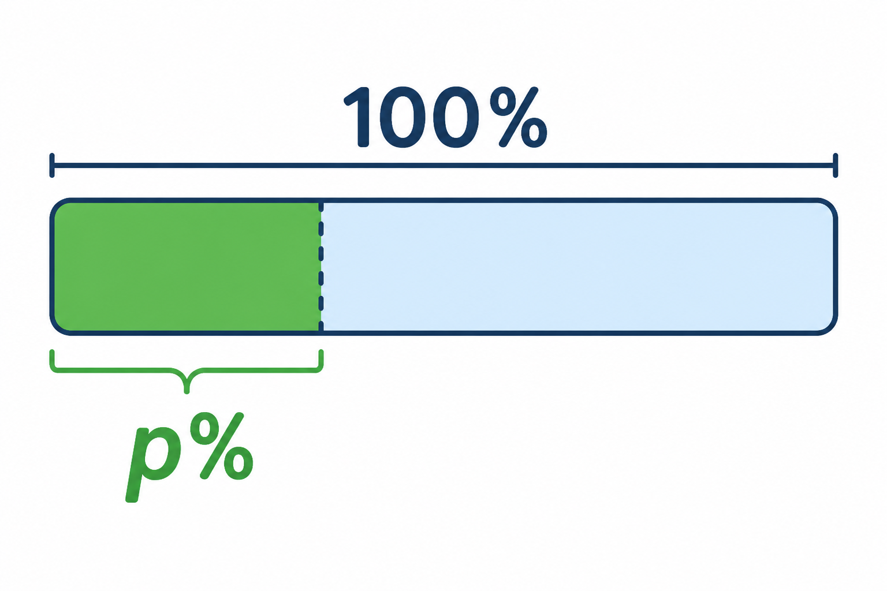

1
procent
відсоток

📘 Co to jest? Що це?
Procent to setna część całości — wygodny sposób mówienia o częściach (jak „ze stu”).
Відсоток — сота частина цілого — зручний спосіб говорити про частини («зі ста»).
⭐ Zapamiętaj Запам'ятай
1% = 1/100 = 0,01
Запам'ятай: 1% = 1/100 = 0,01. 100% — завжди ціле.
⚠ Nie pomyl Не плутай
- 1% = 1/10050% = połowa
- % z liczbynie myl z „punktami procentowymi”
✅ Przykłady Приклади
- 50% = ½
- 25% = ¼
- 100% = całość
- 1% = 1/100
- 20% z 200 = 40